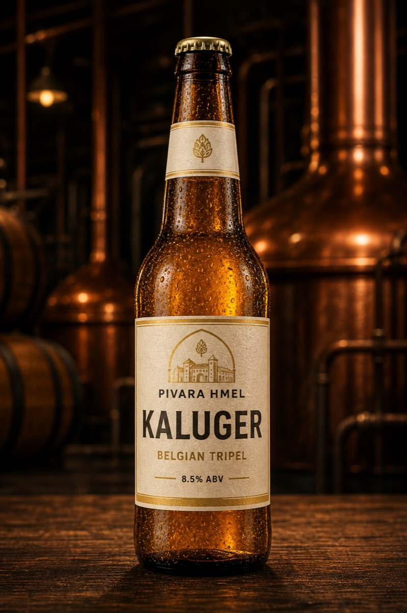
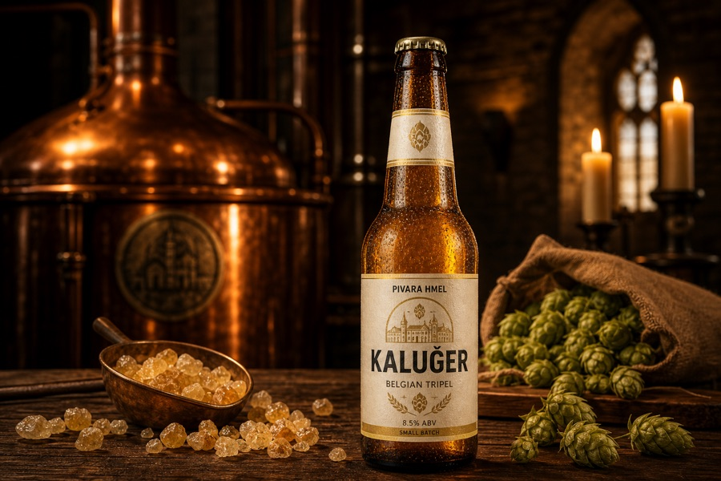

← Сите пиваПробај го во пиварницата
03 / Белгиски трипел
Калуѓер
„Калуѓер“
Златно, суво и измамливо силно, со зачински белгиски квасец.
8.5%ABV
30IBU
5SRM

↔ ПОВЛЕЧИ ЗА ДА ГО ЗАВРТИШ01 / Карактерот
ПОВЕЌЕ ОД
ЕТИКЕТА.
Калуѓер е тивкото силно шише. Канди шеќерот ја крева ферментацијата, но завршетокот останува сув, па алкохолот е скриен зад овошје и зачин.
ДОБРО ДРУШТВО
печено пиле, силно сирење
НАЈДОБРО СЕРВИРАНО
8-10°C · тулипан чаша
02 / Отворен рецепт
- Слад
- Pilsner, Belgian candi sugar
- Хмел
- Styrian Goldings, Saaz
- Квасец
- Belgian abbey
- Почетна густина
- 1.078
- Боја
- 5 SRM
- Алкохол
- 8.5%
03 / Како се вари
ОД ПРВОТО
ЗРНО.
Истражи го секој чекор од рецептот.

01 / 05
Слад и мелење
Светол пилснер слад со белгиски канди шеќер што ја крева јачината без да го отежне телото.
Температура18°C
Густина—
04 / Следниот карактер
Опат
Белгиски дабл · 7.5% ABV